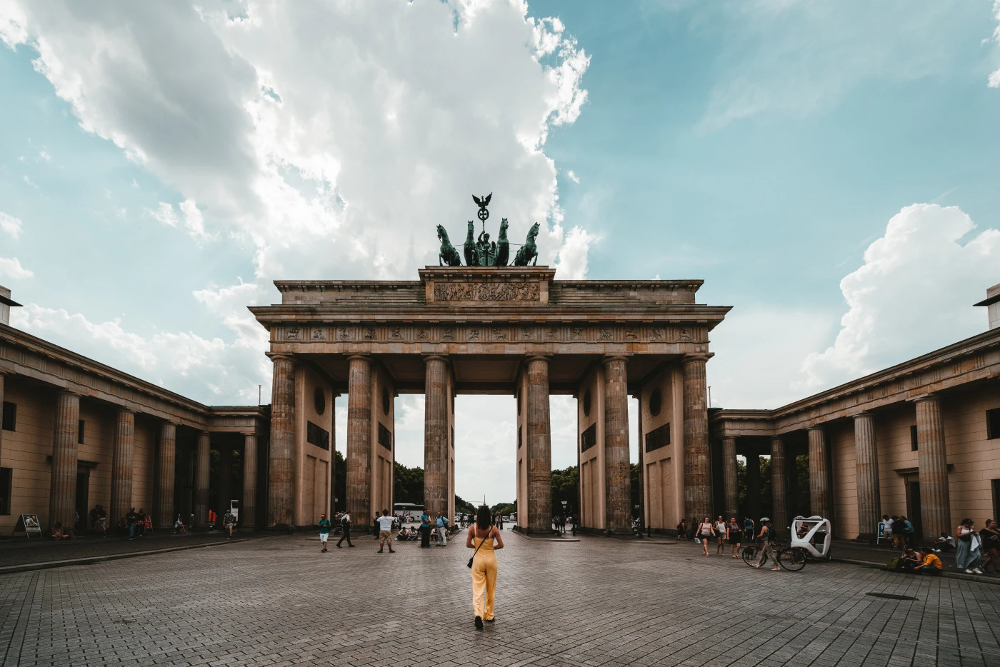
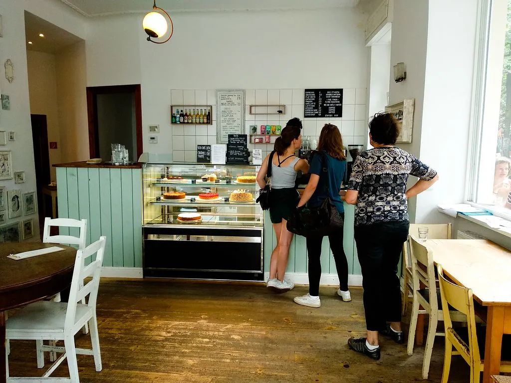
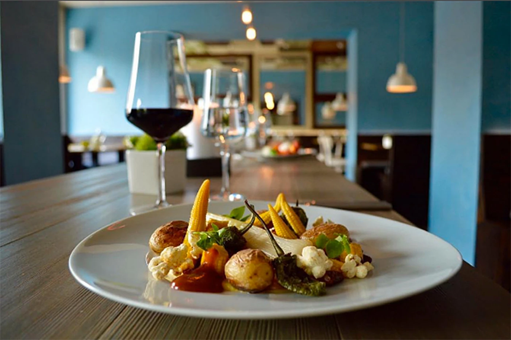
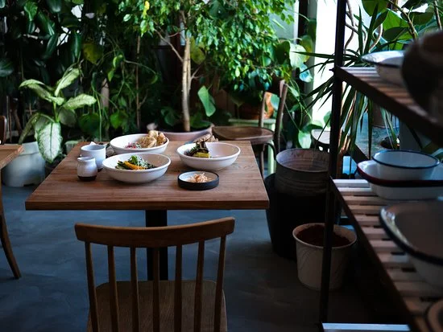
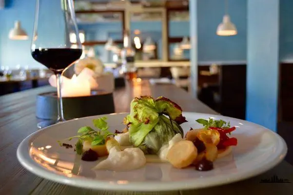

Top 5 Vegan Restaurants to Visit in Berlin, Germany
 Saturday, 10.09.2022Veganism is on the rise, and no city exemplifies this trend better than Berlin. Suppose you're a vegan traveller looking for a destination that will cater to your dietary needs, look no further than Berlin. The German capital is home to a wealth of vegan-friendly restaurants, cafes, and bakeries, making it the perfect place to indulge in delicious plant-based cuisine.
Cafe Vux
If you have a sweet tooth, then this is the place for you. Cafe Vux specializes in - you guessed it - all things cake. But don't worry, they have savoury options too. And everything is vegan!
Kopps
If you're looking for a fine dining experience, Kopps is the place for you. This Michelin-starred restaurant serves up creative takes on classic German dishes, all of which are 100% vegan. From savoury cabbage strudel to delicate almond tarts, there's something for everyone at Kopp's.
Frea
This restaurant is perfect if you're looking for a fancier experience. Frea serves up gourmet vegan cuisine that will tantalize your taste buds. Make sure to make a reservation ahead of time though, as it's always crowded!
Brammibal's Donuts

This popular doughnut shop offers both sweet and savoury options with some inventive flavour combinations such as Earl Grey & Lavender or Cauliflower & Dill Pickle. If you're feeling daring, take on the challenge of the 'deconstructed doughnut' which comes with everything you need to build your own custom creation.
Lucky Leek
For those looking for a more upscale experience, look no further than Lucky Leek. This Michelin-starred restaurant is known for its creative and ever-changing menu, offering unique dishes such as onion tart with pistachio cream or roasted cauliflower with smoked almond milk. With a focus on seasonal and local ingredients, Lucky Leek is the perfect spot for a special night out.
Conclusion:
Whether you're a longtime vegan or simply looking to try something new, Berlin is the perfect destination
for plant-based cuisine. With its plethora of vegan-friendly eateries, there's something for everyone to
enjoy in this vibrant city. So what are you waiting for? Bon appetit!